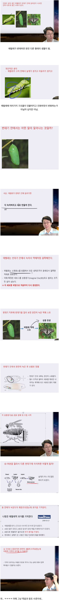

나는 똥이다
.

오....
죽은거 아닌가요 액체된거면
아무튼 살아있다고합니다?? 그 죽음이란무엇인가 요책에서도 저런걸로 떠듭니다 육체와 정신이러면서
죽음이란 무엇인가 읽었는데 저런 내용 없었는데 제가 졸았나봅니다???? 액체가 된다는 사실은 웹툰 통해서 알고 있었는데 자세히 아니까 굉장히 흥미롭고 갑자기 인생사 의미없어져서 죽고싶어졌습니다.
아 저내용은 없죠 그런데 초반부에 육체와 정신 일원화냐 이원화냐 이런내용이 비슷한거같아서요
너무 흥미로워서 제가 또 읽으러 핫게시판입니다
흥미롭습니다 매우
핫게 기준 굉장히 주관적ㅋㅋㅋㅋㅋ
이곳에서 나는 신이자 왕이다
제목도 수정이 가능한가 보네요?
핫게시판 클릭하면 제목이 잘리지 않기 위해 제 독자적이고 강행적 판단으로 수정합니다 (ㅋ) 본문도 수정 가능합니다. 보십시오
오... 서두에 이상한게 보입니다??
제목에 이미 스포가ㅋㅋㅋㅋ
애벌레스프....
윌리엄스의 번데기 실험 보면 같은 내용 나오는데 더 이상한짓도 많이 합니다. 꽤 흥미롭더라구요
죽음의비행인가? 그것도 ㄷㄷ하든데
3번이나 해서 다 같은 결과였다는게 ㄹㅇ 신기합니다

후원댓글 16개
댓글 16개 ▼